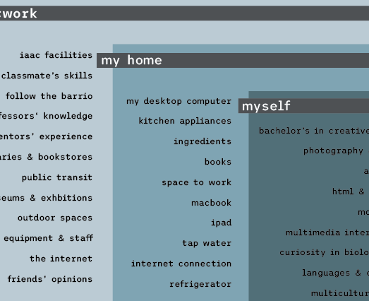

For the hypothetical designed organism, Nuria told me to use my creative skills to compliment the task at hand. I chose to tackle a similar topic as the one above by considering how to break down plastics through enzymes. I read a few articles and papers on PETase, MHETase and Leaf-branch compost cutinase, which I decided to display in a more "user-friendly" way by creating a poster and translating the information into simpler, every day terms. I could imagine it being a poster or flyer for a group of scientists presenting their work to everyday people at a fair or festival. In addition to that, I also made a little interactive project where the user clicks on a circle (the enzyme) and erases colourful particles (microplastics). You will understand better in the videos. The application for this could be a installation in CCCB or a game for children learning about plastic waste solutions.
Bio & Agri Zero notes
For the scientific paper, I chose to read and summarise a report on Upcycling and Catalytic degradation of plastic wastes.

My updated workspace in Barcelona during the Master's program.